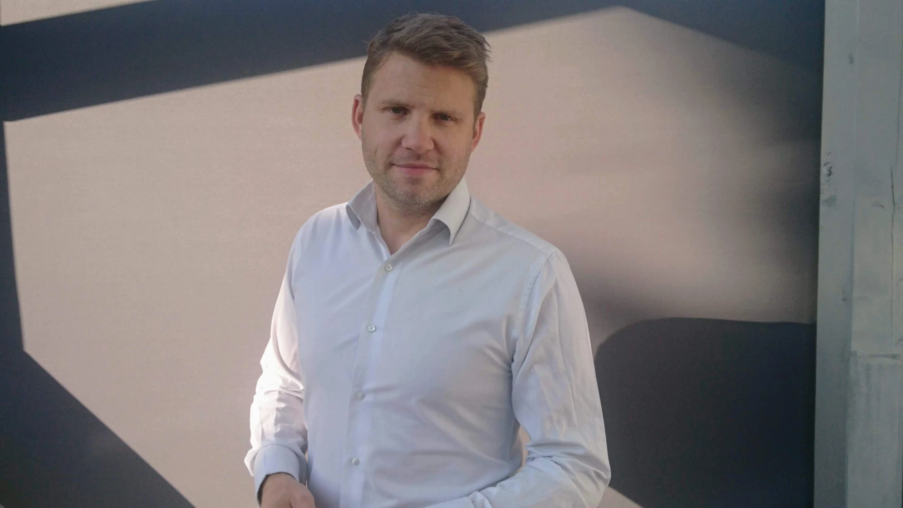

Kommunikation
Moderation, Präsentation und Prozessbegleitung in Live-, Film- und Hybridformaten. Mein akademischer Hintergrund umfasst Abschlüsse der University of Greenwich und der Birmingham City University.
Mehr über Moderation & PräsentationÜber Matt Beadle
Ich bin Matt Beadle: britischer Eventmoderator, Presenter, Keynote-Speaker und Autor aus der Nähe von Bielefeld. Seit 2000 ist Deutschland mein Zuhause. Meine Arbeit führt mich von Leadership-Workshops und Unternehmensproduktionen auf internationale Bühnen und in den Profifußball.

Mein Ausgangspunkt
Meine Familie steht im Mittelpunkt meines Lebens. Sie ist mein Ausgangspunkt – ganz gleich, auf welcher Bühne ich gerade stehe.
Meine Liebe zu Sprache und Rhetorik habe ich von meiner Mutter, einer Sprachwissenschaftlerin. Meine Begeisterung für die Bühne kommt von meinem Vater, einem Musiker. Beide haben mir die Faszination für Sprache und die Freude daran mitgegeben, sie vor Publikum lebendig werden zu lassen.
Diesen Interessen bin ich mit einem Bachelor in Sportwissenschaft und einem Master in Linguistik gefolgt. Heute verbinden sie sich in meiner Arbeit als Moderator, Speaker und im Fußball: Menschen zusammenbringen, Verständnis schaffen und ihnen helfen, ihr Bestes zu geben.
Sogar mein Nachname scheint zu passen. Historisch konnte ein beadle als Ausrufer auftreten: Menschen zusammenbringen und sich Gehör verschaffen. Schon witzig, dass ich meinem Namen offenbar gerecht werde. Nomen est omen, vielleicht?
Ich arbeite auf muttersprachlichem Englisch und fließendem Deutsch. Britischer Humor ist meistens mit dabei.
Einige Stationen meines Weges
Moderation, Präsentation und Prozessbegleitung in Live-, Film- und Hybridformaten. Mein akademischer Hintergrund umfasst Abschlüsse der University of Greenwich und der Birmingham City University.
Mehr über Moderation & PräsentationAutor und ehemaliger Unternehmensgründer mit langjährigem Interesse an Motivation, Stärken und Teamentwicklung. Diese Themen bilden die Grundlage meiner Keynotes.
Zu den KeynotesTechnischer Leiter beim SC Verl und Inhaber der UEFA-A-Lizenz – mit einer weiteren Perspektive auf Identität, Entwicklung und Leistung.
Mehr über meine Arbeit im FußballSo arbeite ich
Ich möchte das Briefing, das Publikum und die Ziele des Veranstaltungsteams verstehen. Darauf bauen wir einen klaren Rahmen auf und lassen Raum für die menschlichen Momente, die in Erinnerung bleiben.
Für ein erstes Gespräch muss noch nicht jedes Detail feststehen. Eine Vorstellung davon, was du erreichen möchtest, ist ein guter Anfang.
Erzähl mir von deinen PlänenErzähl mir von deiner Idee. Wir beginnen mit einem Gespräch.